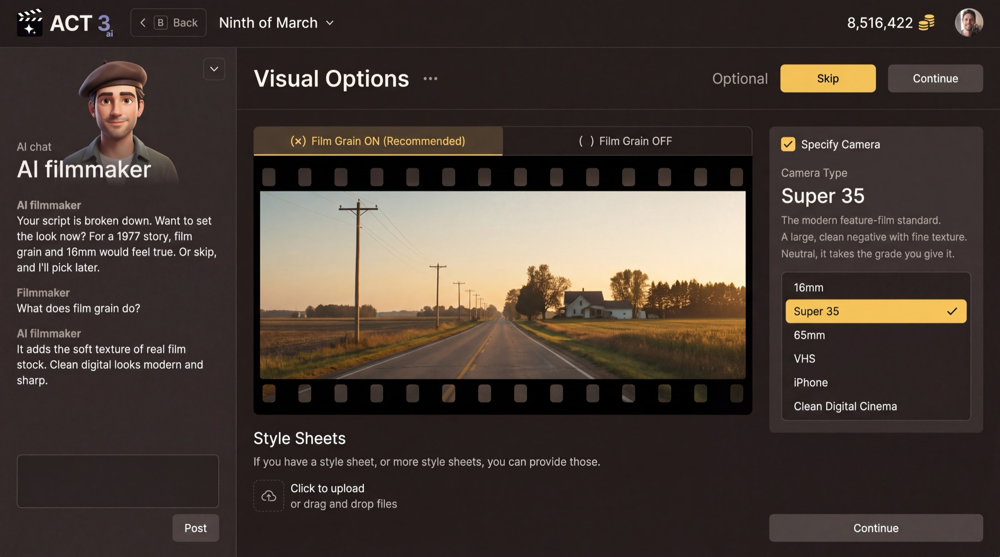

Step 8 of 8
Finish the project and open the Editor
Your script is written; now finish the project and open it in the Editor. Walk Visual Options, Render Style, Characters and Storyboards, pressing Continue or Skip on each. When the film build is ready, click Open the Editor.

Visual Options, then Render Style, then the cast and storyboards, then the Editor.
Back in the New Project wizard
From here the steps are the same ones an imported script walks. The progress bar now reads Start Project · Script · Visuals · Render Style · Characters · Storyboards · Build Film, with Script already done.
- Visual Options (optional): film grain on or off, the camera type (16mm, Super 35, 65mm, VHS, iPhone, Clean Digital Cinema), and any style sheets you have. Skip keeps the defaults.
- Render Style: the look every generated shot follows, from Real Life to Anime, Clay, Comic Book or Film Noir. You can change it later.
- Characters: read the cast the script produced and fix it, then choose how their looks are made.
- Storyboards: have a storyboard drawn for every shot, or Skip ›.
- Building your film: AI agents build the characters, sets and shots. When the first beat is ready you can press Open the Editor; the rest keeps building.
Your decisions on the way
- Character looks: pick We Create Character Sheets to have the AI design each character, or Create Characters by Uploading Photos when you have real actors. Either way you can change any look later.
- Storyboards: say yes when you want to check every shot's framing before spending credits on video. Skip when you would rather go straight to the Editor.
Where you end up
The Editor opens with your AI-written script in the Script pane on the right, the timeline of acts, beats, scenes and shots across the top, and the AI chat ready for changes. From here, guide 5 builds the storyboard, guide 6 improves a first frame, and guide 7 builds the videos.